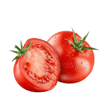

Тест: насколько вы здоровы
Пройдите бесплатный тест и узнайте состояние вашего здоровья в соответствии с вашим питанием

1. Чем вы утоляете жажду?
Водой
Газировкой
Алкоголем
2. Какие молочные продукты вы едите чаще всего?
Творог и молоко
Кефир, ряженка
Сгущенка, йогурты
Молочные коктейли
3. Присутствуют ли в вашем рационе питания фрукты и овощи?
Да
Нет
Иногда
4. Исключаете ли вы из своего питания вредные продукты?
Да, постепенно убираю
Стараюсь, но не всегда получается
Нет, я ем все
5. Сколько раз в день вы едите?
4-5 раз
2-3 раза
1-2 раза
6. За день в выпиваете:
Больше двух литров воды
Около 1,5 литров воды
Около литра воды
7. Вы завтракаете?
каждый день
раз в неделю
иногда
8. Как часто вы кушаете рыбу?
более двух раз в неделю
один - два раза в неделю
один раз в неделю или реже
9. Вы регулярно кушаете сухофрукты и орехи?
да
время от времени
нет
10. Какой ингридиент опаснее всего в составе продукта?
пальмовое масло
заменитель молочного жира
сахар
11. Соблюдаете ли вы режим питания?
да, в обязательном порядке
стараюсь придерживаться моего распиисания, но иногда не выходит
ем, когда проголодаюсь
12. Занимаетесь спортом?
2-3 раза в неделю
вообще не занимаюсь
да, много!
13. Всегда ли вы тщательно пережевываете пищу?
нет, это не про меня
во многом зависит от времени, которым я располагаю
разумеется, да
14. Едите ли вы на ночь?
да, бывает
позднее шести вечера не ем
прекращаю прием пищи не менее чем за два часа до сна
15. Какие продукты нужно употреблять меньше всего?
мясо и мясные продукты, рыба и рыбные продукты
овощи, фрукты в любом виде
сыры и молочные продукты
шоколад
16. Такие углеводы лучше всего усваиваются организмом человека:
углеводы, содержащиеся в крупах
углеводы, содержащиеся в макаронных изделиях
углеводы, содержащиеся в свежих овощах и фруктах
углеводы, содержащиеся в меде и сладком
17. Самый полезный прием пищи для человека:
завтрак
обед
полдник
ужин
18. Что из перечисленного вы бы выбрали на завтрак?
бутерброд с сыром и колбасой и чашка кофе
овсяная каша со свежевыжатым соком
по утрам у меня нет аппетита, я тороплюсь и не успеваю поесть
19. Как часто вы едите торты с кремом, шоколад?
раз в неделю
от 1 до 4-х раз в неделю
почти каждый день
20. Как часто вы питаетесь фаст-фудом?
каждый день
редко могу себе позволить
никогда